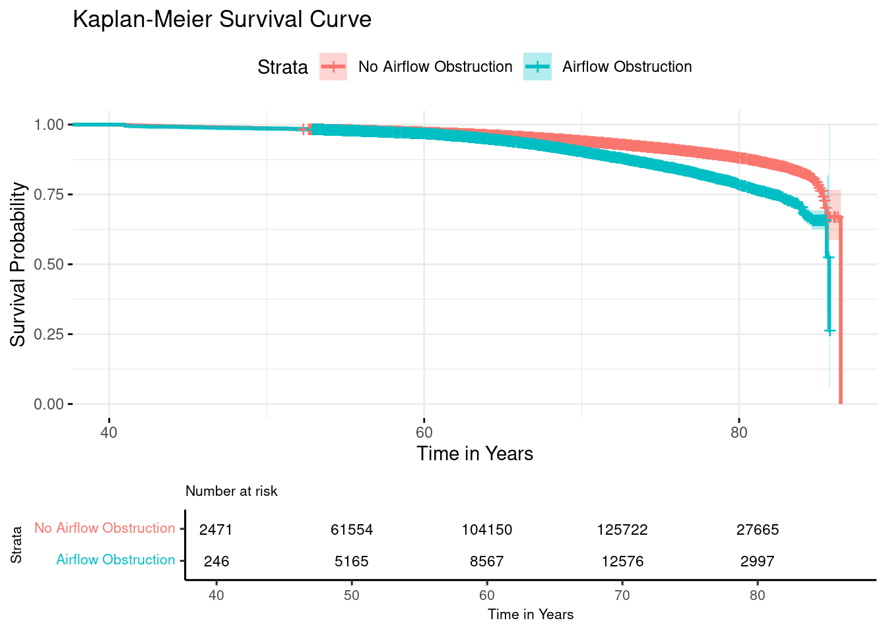
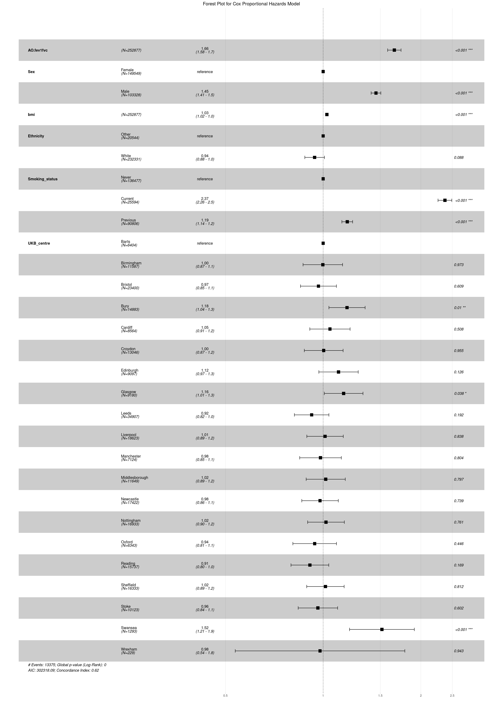
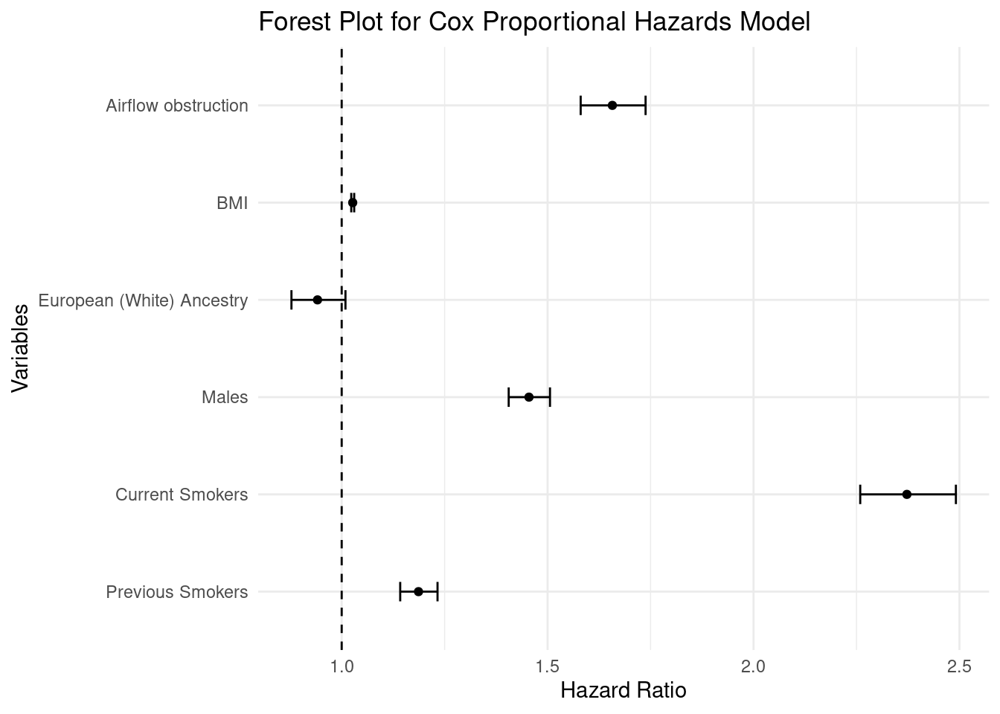

Using the previous data set we curated, we can now conduct the survival analysis. The Surv() function from the {survival} package creates a survival object for use as the response in a model formula. This object is then used to calculate the survival time of our desired model.
Univariate (unadjusted) model
Firstly, we must build a survival object for all cause mortality, (this can be altered to different types of death see Advanced Survival Analysis).
#Survival analysis people with [disease] vs [no disease] library(survival)library(survminer)library(ggplot2)library(gtsummary)library(knitr)library(dplyr)load("data/result.RData")death$allcause_death <-as.numeric(death$allcause_death)Surv(death$time_years, death$allcause_death)[1:10]
From this we can see that only the first person experienced the event at 67.56 years, the rest, as indicated by the “+” have not experienced the event and therefore are said to be censored.
Note: Possible Error
It is common that our code returns an error: “Invalid status value, must be logical or numeric”, if we have not specified the type of variable we want to store our all-cause mortality variable (status). This can be easily corrected with the code below.
#Surv(death$time_years, death$allcause_death): Invalid status value, must be logical or numeric. If this error appears, simply convert to numeric#death$allcause_death <- as.numeric(death$allcause_death)
Creating survival curves
Let’s now use the survfit() function to create the survival curves for the entire cohort using the Kaplan-Meier method. In this example we defined the outcome as 0/1 for airflow obstruction.
LTRC_ats <-Surv(time =death$Age, time2 = death$time_years, event = death$allcause_death)#Unadjusted for covariatesfit1 <-survfit(LTRC_ats ~ AO.fev1fvc, data = death)summary_fit1 <-summary(fit1)time <- summary_fit1$timen_risk <- summary_fit1$n.risksurv <- summary_fit1$survlower_ci <- summary_fit1$lowerupper_ci <- summary_fit1$upper# Display the first few rows of these componentsresult <-data.frame(Time = time[1:10],N_Risk = n_risk[1:10],Survival = surv[1:10],Lower_CI = lower_ci[1:10],Upper_CI = upper_ci[1:10])print(result)
Survival analysis results may be presented in different ways depending on the type of analysis. For instance, univariate (unadjusted) models may be presented in a Kaplan-Meier Curve.
Kaplan-Meier Curve and Log-Rank test
The Kaplan-Meier method is a widely used technique for estimating survival times and probabilities. The results are represented as a step function, with each step corresponding to an event occurrence.
To compare survival curves between different groups, the Log-rank test is commonly used. This statistical test evaluates whether there are significant differences in survival distributions by comparing observed and expected event rates across groups.
#Plotting the results km_plot <-ggsurvplot( fit1, data = death, conf.int =TRUE,risk.table =TRUE,ggtheme =theme_minimal(),title ="Kaplan-Meier Survival Curve",xlab ="Time in Years",ylab ="Survival Probability",legend.labs =c("No Airflow Obstruction", "Airflow Obstruction"),#Change stataxlim =c(40, max(fit1$time)), # Set x-axis limits (start at 40 min age)risk.table.fontsize =3, # Adjust the font size for the risk table numberstables.theme =theme_survminer(font.main =8, font.submain =8, font.caption =8, font.x =8, font.y =8, font.tickslab =8 ))print(km_plot)

Overview of the survival model
We can present an overview of the survival model in a table.
summary_fit1 <-summary(fit1)# Extract key summary statisticssummary_table <-data.frame(Time = summary_fit1$time,N.risk = summary_fit1$n.risk,N.event = summary_fit1$n.event,Survival = summary_fit1$surv,Standard.Error = summary_fit1$std.err,Lower.CI = summary_fit1$lower,Upper.CI = summary_fit1$upper )# Display the summary tablekable(summary_table[1:15, ], caption ="Summary of Survival Fit for Airflow obstruction (AO.fev1fvc)")
Summary of Survival Fit for Airflow obstruction (AO.fev1fvc)
Time
N.risk
N.event
Survival
Standard.Error
Lower.CI
Upper.CI
40.29295
2471
1
0.9995953
0.0004046
0.9988026
1.0000000
40.53388
2470
1
0.9991906
0.0005721
0.9980700
1.0000000
40.78029
2469
1
0.9987859
0.0007005
0.9974139
1.0000000
41.05955
7386
1
0.9986507
0.0007134
0.9972535
1.0000000
41.23751
7385
1
0.9985155
0.0007260
0.9970936
0.9999394
41.34428
7384
1
0.9983802
0.0007384
0.9969341
0.9998284
41.34702
7383
1
0.9982450
0.0007505
0.9967751
0.9997171
41.38809
7382
1
0.9981098
0.0007625
0.9966164
0.9996054
41.39083
7381
1
0.9979746
0.0007743
0.9964581
0.9994933
41.42642
7380
1
0.9978393
0.0007859
0.9963001
0.9993809
41.43737
7379
1
0.9977041
0.0007974
0.9961425
0.9992682
41.46201
7378
1
0.9975689
0.0008087
0.9959852
0.9991551
41.61533
7377
1
0.9974336
0.0008198
0.9958282
0.9990417
41.74675
7376
1
0.9972984
0.0008307
0.9956715
0.9989280
41.80698
7375
1
0.9971632
0.0008416
0.9955151
0.9988140
Calculating Median Survival time
The median survival time is often reported in a survival analysis for each of the groups we are comparing.
median_survival <- fit1median_survival
Call: survfit(formula = LTRC_ats ~ AO.fev1fvc, data = death)
1325 observations deleted due to missingness
records n.max n.start events median 0.95LCL 0.95UCL
AO.fev1fvc=0 229908 136318 2471 11251 86.5 NA NA
AO.fev1fvc=1 21644 13187 246 2164 85.7 85.6 NA
We can see that the median survival time for people without airflow obstruction is 86.5 years compared to 85.7 years in people with airflow obstruction. Meaning that people with AO live less than those without.
Log Rank Test
# Create the survival object for right-censored dataright_censored_surv <-Surv(time = death$time_years, event = death$allcause_death)# Fit the survival modelfit2 <-survfit(right_censored_surv ~ AO.fev1fvc, data = death)# Perform log-rank testlog_rank_test <-survdiff(right_censored_surv ~ AO.fev1fvc, data = death)#Log-rank test results print(log_rank_test)
Call:
survdiff(formula = right_censored_surv ~ AO.fev1fvc, data = death)
N Observed Expected (O-E)^2/E (O-E)^2/V
AO.fev1fvc=0 231027 12370 13399 79 869
AO.fev1fvc=1 21850 2370 1341 790 869
Chisq= 869 on 1 degrees of freedom, p= <2e-16
A significant Log-Rank test results means that there are statistically significant differences between the two groups we are comparing (e.g. People with AO vs people without AO)
Multivariate (adjusted) model
Multivariate (adjusted) models are used to account for confounders that may impact the associations between the exposure and the outcome. It is common to have complex models adjusting for multiple covariates, and therefore presenting these on a KM curve would be confusinve and not informative. Therefore, results from a multivatiate model are better presented in a table or a forest plot.
#Survival analysis people with SAO vs no SAO library(survival)library(survminer)library(ggplot2)library(gtsummary)#Order smoking status correctlydeath$Smoking_status <-as.factor(death$Smoking_status)death$Smoking_status <-relevel(death$Smoking_status, ref ="Never")#All cause mortality adjusted for covariatesLTRC_ats <-Surv(time =death$Age, time2 = death$time_years, event = death$allcause_death)coxph_LTRC_airflow <-coxph(LTRC_ats ~ AO.fev1fvc + Sex + bmi + Ethnicity + Smoking_status + UKB_centre, data = death)summary(coxph_LTRC_airflow)
From the summary results, we can export the results in a table, where exp(coef) corresponds to the Hazard Ratio (HR), we also report the 95% Confidence Intervals and the P-Value for our outcome and each covariate.
#Save table as docx#flex_tbl <- as_flex_table(tb1)# Save as Word document#read_docx() %>%# body_add_flextable(value = flex_tbl) %>%# print(target = "allcause_mortality.docx")
Present results in a forest plot
The results from the Cox Proportional Hazard model may also be presented in a graphical manner using a forest plot.
Forest plot with all variables that were included in the model

Forest plot selecting variables we want to present
# Extract the coefficients and confidence intervalscoefs <-summary(coxph_LTRC_airflow)$coefficientsconfint <-summary(coxph_LTRC_airflow)$conf.int# Exclude UKB_centre variablesexclude_indices <-grepl("UKB_centre", rownames(coefs))coefs <- coefs[!exclude_indices, ]confint <- confint[!exclude_indices, ]# Create a dataframe for plottingforest_data <-data.frame(Variable =rownames(coefs),HR = coefs[, "exp(coef)"],LowerCI = confint[, "lower .95"],UpperCI = confint[, "upper .95"])# Rename the specific variable# Optionally, clean up other variable names for better readabilityforest_data$Variable <-ifelse(forest_data$Variable =="AO.fev1fvc", "Airflow obstruction", forest_data$Variable)forest_data$Variable <-ifelse(forest_data$Variable =="bmi", "BMI", forest_data$Variable)forest_data$Variable <-ifelse(forest_data$Variable =="EthnicityWhite", "European (White) Ancestry", forest_data$Variable)forest_data$Variable <-ifelse(forest_data$Variable =="SexMale", "Males", forest_data$Variable)forest_data$Variable <-ifelse(forest_data$Variable =="Smoking_statusCurrent", "Current Smokers", forest_data$Variable)forest_data$Variable <-ifelse(forest_data$Variable =="Smoking_statusPrevious", "Previous Smokers", forest_data$Variable)# Specify the desired order of variablesdesired_order <-c("Airflow obstruction", "BMI", "European (White) Ancestry", "Males", "Current Smokers", "Previous Smokers")# Set the levels of the Variable column according to the desired orderforest_data$Variable <-factor(forest_data$Variable, levels =rev(desired_order))# Create the forest plotforest_plot <-ggplot(forest_data, aes(x = HR, y = Variable)) +geom_point() +geom_errorbarh(aes(xmin = LowerCI, xmax = UpperCI), height =0.2) +geom_vline(xintercept =1, linetype ="dashed") +labs(title ="Forest Plot for Cox Proportional Hazards Model",x ="Hazard Ratio",y ="Variables") +theme_minimal()# Display the plotprint(forest_plot)

Interpretation of results
Think, think, think
From these results, we can conclude that:
Participants with airflow obstruction have significantly increased all cause mortality risk compared to participants without airflow obstruction (HR = 1.66, 95% CI = 1.58, 1.74)
The risk is 1.45 times higher in males compared to females
The risk is 2.37 times higher among current smokers and 1.19 times among previous smokers compared to never smokers
Model is adjusted for age (as used as the time scale), sex, smoking status, BMI, Ethnicity and UK Biobank Centre
Similar conclusions can be drawn from the other predictor variable used, but the idea is to report the change in risk between the two groups we are comparing.